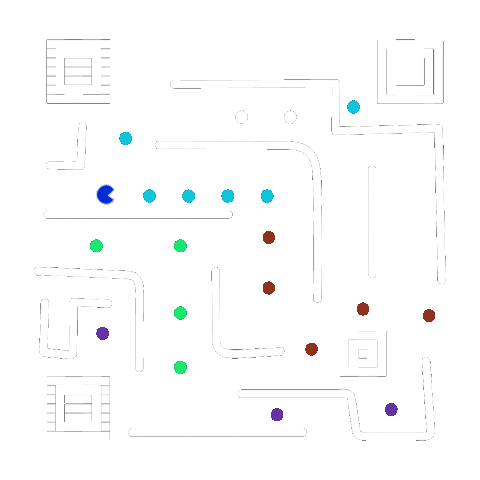
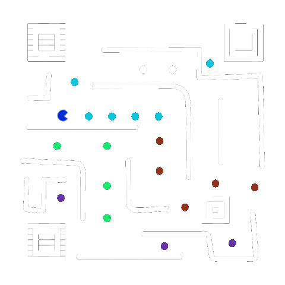

A HISTÓRIA DO PACMAN
começou em um jantar com muita pizza...
Pac-man é considerado um clássico da história dos videogames. Elaborado para o console Atari 2600 no início dos anos 80, tornou-se um dos jogos mais populares do mundo. A mecânica do game era simples: Pac-Man comia pastilhas fugindo de fantasmas em um labirinto. O objetivo era comer todas as pastilhas sem ser alcançado pelos fantasmas, aumentando progressivamente a dificuldade.
 

O designer de jogos da Namco, Tohru Iwatani, idealizou o conhecidíssimo Pac-Man em um jantar entre amigos. Sua inspiração partiu de uma pizza que viera com uma fatia faltando. Antes de ser o Pac-Man, o personagem dos videogames se chamava Puck-Man, porém decidiram mudar seu nome para evitar que “Puck” ganhasse uma conotação pejorativa na língua inglesa.